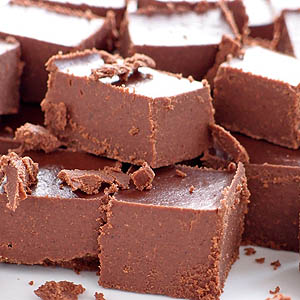

Chocolate Fudge

image from Food24
Chocolate Fudge - The Non-dairy way
Peri Peri sauce is just not "the everyday" condiment, use it as a marinade,
a dressing, a dipping sauce or a basting sauce. Best enjoyed with friends.
Ingredients
- ½ cup cacao power
- 1 cup dates - pitted
- 1 cup coconut oil
- 1 tsp vanilla - powder
- 1 pinch salt
Steps
- Cover the dates in water and allow to soften (use warm water to speed up this process)
- Add everything together in a food processor and process until completely smooth and mixed.
This takes up to 20 minutes, and is well worth spending the time on this part.
- Pour into a shallow dish and allow it to set in the fridge. After about 3-4 hours, cut into squares.